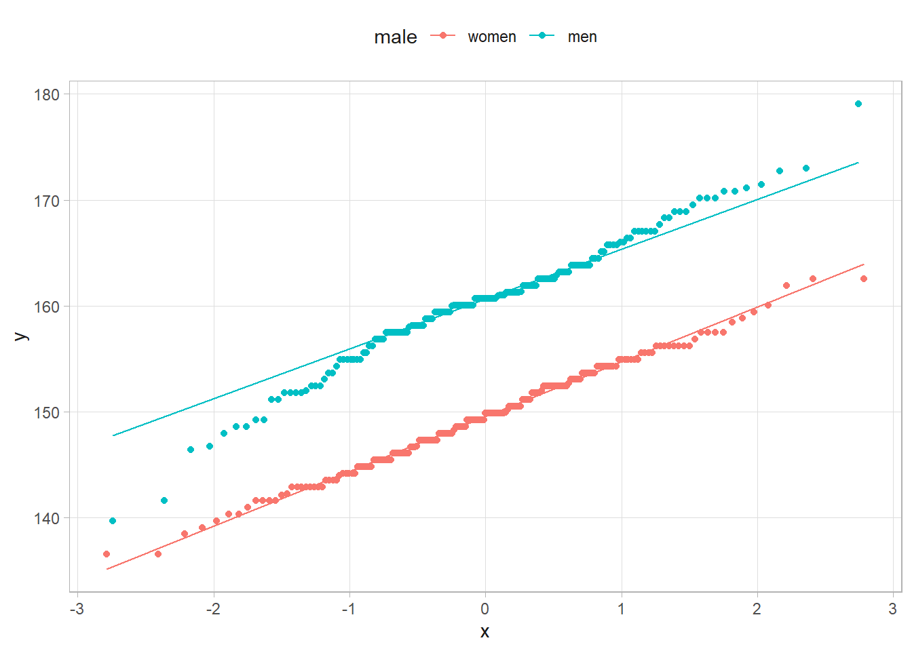
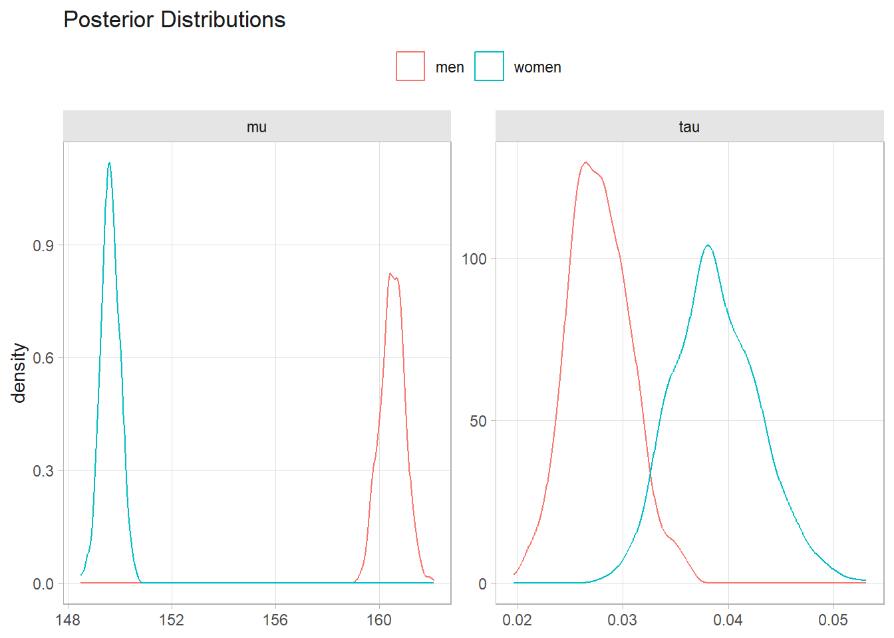
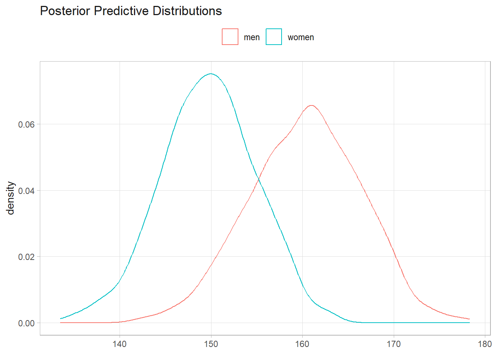
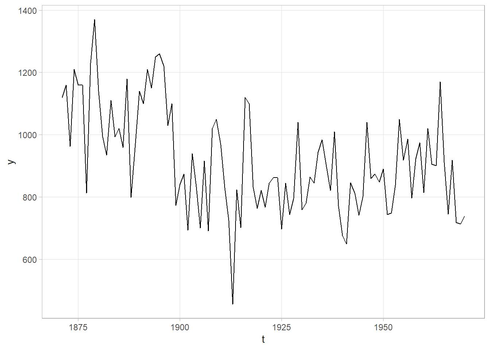

3.7 Normal
3.7.1 Population Estimate
Suppose you have a sample, \(\textbf{y}\), from a normally distribution population of unknown mean and precision, \(\mu\) and \(\tau\): \(y_i|\mu, \tau \sim N(\mu, \tau)\).3 Assume a normal prior for \(\mu \sim N(\mu_0, \tau_0)\), and a gamma prior for \(\tau \sim \text{Gamma}(a, b)\) since it takes only positive values. The PDF for \(y_i\) is \(f(y_i | \mu, \tau) = \frac{\tau^{.5}}{\sqrt{2\pi}} \exp\left(-\frac{\tau}{2} (y_i - \mu)^2 \right)\). We’ll derive posterior distributions for \(\mu\) and \(\tau\) separately.
Using Bayes’ Theorem, the posterior distribution of \(\mu|y\) is the joint likelihood of \(y\) and \(\mu\) divided by the likelihood of \(y\),
\[ f(\mu|y) = \frac{f(y|\mu)f(\mu)}{\int_\mu f(y|\mu)f(\mu)d\mu} \]
The conditional likelihood, \(f(\mu|y)\), is the sum-product of the normal distribution PDF. We can take \(\tau\) as given initially.
\[ \begin{align} f(y|\mu) &= \prod_i \frac{\tau^{(1/2)}}{\sqrt{2\pi}} \exp\left(-\frac{\tau}{2} (y_i - \mu)^2 \right) \\ &\propto \prod_i \exp\left(-\frac{\tau}{2} (y_i - \mu)^2 \right) \\ &\propto \exp \left( -\frac{\tau}{2} \sum_i(y_i - \mu)^2 \right) \end{align} \]
The prior PDF for \(\mu\) is the normal distribution. Again we take \(\tau\) as given initially.
\[ \begin{align} f(\mu) &= \frac{\tau_0^{1/2}}{\sqrt{2\pi}} \exp\left(-\frac{\tau_0}{2} (\mu - \mu_0)^2 \right) \\ &\propto \exp\left(-\frac{\tau_0}{2} (\mu - \mu_0)^2 \right) \end{align} \]
Substitute into Bayes’ Theorem. Since we are working with proportions, we can throw out the denominator and say \(f(\mu|y) \propto f(y|\mu)f(\mu)\). Plugging in and solving, we get
\[ \begin{equation} \mu|y \sim N\left(\frac{n\tau\bar{y} + \tau_0\mu_0}{n\tau + \tau_0}, n\tau + \tau_0 \right) \tag{3.4} \end{equation} \]
Using Bayes’ Theorem, the posterior distribution of \(\tau|y\) is the joint likelihood of \(y\) and \(\tau\) divided by the likelihood of \(y\),
\[ f(\tau|y) = \frac{f(y|\tau)f(\tau)}{\int_\tau f(y|\mu)f(\tau)d\tau} \]
The conditional likelihood, \(f(\tau|y)\), is the sum-product of the gamma distribution PDF. This time we take \(\mu\) as given.
\[ \begin{align} f(y|\tau) &= \prod_i \frac{\tau^{(1/2)}}{\sqrt{2\pi}} \exp\left(-\frac{\tau}{2} (y_i - \mu)^2 \right) \\ &= \frac{\tau^{n/2}}{(2\pi)^{n/2}} \exp\left(-\frac{\tau}{2} \sum_i (y_i - \mu)^2 \right) \\ &\propto \tau^{n/2} \exp \left( -\frac{\tau}{2} \sum_i(y_i - \mu)^2 \right) \end{align} \]
The prior PDF for \(\tau\) is the gamma distribution. Pull the constant out to work with proportionality.
\[ \begin{align} f(\tau) &= \frac{b^a \tau^{a-1} e^{-b\tau}}{\Gamma(a)} \\ &\propto \tau^{a-1}e^{-b\tau} \end{align} \]
Substitute into Bayes’ Theorem. Since we are working with proportions, we can throw out the denominator and say \(f(\tau|y) \propto f(y|\tau)f(\tau)\). Plugging in and solving, we get
\[ \begin{equation} \tau|y \sim \text{Gamma}\left(a + n/2, b + \frac{1}{2} \sum_i(y_i - \mu)^2 \right) \tag{3.5} \end{equation} \]
We have \(y_i|\mu,\tau \sim N(\mu,\tau)\) with conjugate priors \(\mu \sim N(\mu_0, \tau_0)\) and \(\tau \sim \text{Gamma}(a,b)\) and conditional posterior distributions shown in Eqns (3.4) and (3.5). Returning to Eqn (3.4), you can see how \(E[\mu] \rightarrow \bar{y}\) as the sample size grows. Below, the terms divided by \(n\) disappear, leaving just \(\bar{y}\).
\[ \begin{align} E[\mu|\tau, y] &= \frac{n\tau\bar{y} + \tau_0\mu_0}{n\tau + \tau_0} \\ &= \frac{\bar{y}\tau + \mu_0\tau_0/n}{\tau + \tau_0/n} \\ &\sim \bar{y} \end{align} \]
The posterior mean estimator of \(\tau\) is the ratio of the posterior gamma distribution parameters. Again, as the sample size increases, terms divided by \(n\) disappear.
\[ \begin{align} E[\tau|\mu,y] &= \frac{a + n/2}{b + \frac{1}{2} \sum_i(y_i - \mu)^2} \\ &= \frac{2a/n + 1}{2b/n + \sum_i(y_i - \mu)^2 / n} \\ &\sim \frac{1}{\sum_i(y_i - \mu)^2} \end{align} \]
The problem here is that you never know \(\mu\) or \(\tau\), so you cannot use the posterior formulas directly. Instead, you need to use sampling. In particular, you use the Gibbs sampler. Set \(\mu\) and \(\tau\) to some initial values and use the posterior equations to estimate new values for \(\mu\) and \(\tau\), then repeat. This is called Markov Chain Monte Carlo (MCMC) simulation because you are chaining the simulations. The method of sampling from a conditional posterior is called the Gibbs sampler.
Let’s apply this using anthropological data collected by Nancy Howell of human height.
# downloaded this from
# https://github.com/rmcelreath/rethinking/blob/master/data/Howell1.csv
howell <- read_delim("input/Howell1.csv", delim = ";", show_col_types = FALSE) %>%
filter(age >= 18) %>%
mutate(male = factor(male, labels = c("women", "men")))
howell %>%
ggplot(aes(sample = height, color = male)) +
stat_qq() +
geom_qq_line()
From prior knowledge, we know average human height is about \(175 \pm 10\) cm. Using the \(\pm\) = 2SD, the variance \(5^2\). Use vague priors of \(\mu \sim N(\mu_0 = 175, \tau_0 = 1/5^2)\) and \(\tau = \sim \text{Gamma}(a = .01, b = .01)\). Start by assigning starting values, \(\mu*\) and \(\tau*\)). Given \(\tau = \tau*\), sample a new value of \(\mu*\) from the normal distribution. Given \(\mu = \mu*\), sample a new value of \(\tau*\) from the gamma distribution. Then repeat.
gibbs_normal <- function(y, mu_0, tau_0, a, b, n_iter){
n <- length(y)
y_mean <- mean(y)
mu_sample <- tau_sample <- numeric(n_iter)
# starting values
mu_sample[1] <- mean(y)
tau_sample[1] <- 1 / var(y)
# Gibbs sampler
for(i in 2:n_iter){
# mu
tau <- tau_sample[i-1]
mean_mu <- (n * y_mean * tau + mu_0 * tau_0) / (n * tau + tau_0)
precision_mu <- n * tau + tau_0
mu_sample[i] <- rnorm(1, mean_mu, 1 / sqrt(precision_mu))
# tau
mu <- mu_sample[i-1]
tau_sample[i] <- rgamma(1, a + n/2, b + .5 * sum((y - mu)^2))
}
return(list(mu = mu_sample, tau = tau_sample))
}
set.seed(12345)
sample_m <- gibbs_normal(howell[howell$male == "men",]$height, 175, 1/5^2, .01, .01, 10^3)
sample_w <- gibbs_normal(howell[howell$male == "women",]$height, 175, 1/5^2, .01, .01, 10^3)
# posterior mu
mean(sample_m$mu); quantile(sample_m$mu, c(.025, .975))
## [1] 160.5146
## 2.5% 97.5%
## 159.6103 161.4231
mean(sample_w$mu); quantile(sample_w$mu, c(.025, .975))
## [1] 149.6363
## 2.5% 97.5%
## 148.9256 150.3641
# posterior probability that men are taller than women on average
mean(sample_m$mu > sample_w$mu)
## [1] 1
# posterior probability that a random man is taller than a random woman
tilde_m <- rnorm(10^3, mean(sample_m$mu), sqrt(1/mean(sample_m$tau)))
tilde_w <- rnorm(10^3, mean(sample_w$mu), sqrt(1/mean(sample_w$tau)))
mean(tilde_m > tilde_w)
## [1] 0.909
tibble(
iter = rep(1:10^3, 2),
sex = c(rep("men", 10^3), rep("women", 10^3)),
mu = c(sample_m$mu, sample_w$mu),
tau = c(sample_m$tau, sample_w$tau),
) %>%
pivot_longer(cols = c(mu, tau)) %>%
ggplot(aes(x = value, color = sex)) +
geom_density() +
facet_wrap(facets = vars(name), scales = "free") +
labs(title = "Posterior Distributions", x = NULL, color = NULL)
tibble(
iter = rep(1:10^3, 2),
sex = c(rep("men", 10^3), rep("women", 10^3)),
tilde = c(tilde_m, tilde_w)
) %>%
ggplot(aes(x = tilde, color = sex)) +
geom_density() +
labs(title = "Posterior Predictive Distributions", x = NULL, color = NULL)
It may take some time to converge on a solution. This convergence is called burn-in and is often discarded when describing the posterior. Slow mixing may occur if there is high autocorrelation in the Gibbs sample, resulting in slow exploration of the sample space of the posterior.
3.7.2 Regression
Returning to the Howell data, suppose you want to fit a linear model, \(\text{Weight}_i = a + b \text{Height} + \epsilon_i\). In Bayesian regression, this is expressed as \(\text{Weight} | \mu_i \sim N(\mu_i, \tau)\) where \(\mu_i = a + b\text{Height}\). You can construct a Gibbs sampler to estimate the model, but there is already a package for that, MCMCglmm.
library(MCMCglmm)
set.seed(12345)
mdl_1 <- MCMCglmm(
weight ~ height,
data = howell,
family = "gaussian",
nitt = 11000, # iterations
burnin = 1000, # burn-in period to throw out
thin = 10,
# could omit this prior since it is non-informative
prior = list(B = list(mu = c(0, 0), V = c(100^2, 100^2)*diag(2))),
verbose = FALSE
)
summary(mdl_1)##
## Iterations = 1001:10991
## Thinning interval = 10
## Sample size = 1000
##
## DIC: 2020.205
##
## R-structure: ~units
##
## post.mean l-95% CI u-95% CI eff.samp
## units 18.16 15.73 20.81 1000
##
## Location effects: weight ~ height
##
## post.mean l-95% CI u-95% CI eff.samp pMCMC
## (Intercept) -52.5503 -61.9377 -44.0584 1000.0 <0.001 ***
## height 0.6309 0.5717 0.6874 912.8 <0.001 ***
## ---
## Signif. codes: 0 '***' 0.001 '**' 0.01 '*' 0.05 '.' 0.1 ' ' 1## [1] 1# Posterior inference.
new_data <- tibble(height = seq(130, 185, .1), weight = 0)
cred_intvl <- predict(mdl_1, newdata = , type = "response", interval = "confidence")
pred_intvl <- predict(mdl_1, newdata = , type = "response", interval = "prediction")
howell %>%
bind_cols(cred_intvl, pred_intvl, .name_repair = "unique") %>%
ggplot(aes(x = height)) +
geom_ribbon(aes(ymin = `lwr...9`, ymax = `upr...10`), fill = "lightgoldenrod", alpha = .5) +
geom_ribbon(aes(ymin = `lwr...6`, ymax = `upr...7`), fill = "goldenrod", alpha = .5) +
geom_line(aes(y = `fit...5`), color = "goldenrod", linewidth = 1) +
geom_point(aes(y = weight)) +
labs(y = "weight", title = "95% CI and PI.")
You can extend this to multivariate models.
set.seed(12345)
mdl_2 <- MCMCglmm(
weight ~ height*male,
data = howell,
family = "gaussian",
nitt = 11000, # iterations
burnin = 1000, # burn-in period to throw out
thin = 10,
#prior = list(B = list(mu = c(0, 0), V = c(100^2, 100^2)*diag(2))),
verbose = FALSE
)Bayesian statistics has its analog to Akaike’s Information Criterion (AIC) called Deviance Information Criterion (DIC).
\[ DIC = p_D + \overline{D(\theta)} \]
where \(p_D = \overline{D(\theta)} - D(\hat{\theta})\) and \(D(\theta) = -2 \log (f(y|\theta)) + C\). The value of DIC has no real meaning, but for comparison purposes, lower is better. A difference of at least 3 is considered sufficient evidence to choose one model over another. Here, mdl_1$DIC = 2020.2047497 and mdl_2$DIC = 2023.9678623. The first model is better, so conclude that there is no statistical evidence that the correlation between weight and height depends on sex (\(\Delta\)DIC = 3.7631126).
mdl_3 <- MCMCglmm(
weight ~ age,
data = howell,
family = "gaussian",
nitt = 11000, # iterations
burnin = 1000, # burn-in period to throw out
thin = 10,
#prior = list(B = list(mu = c(0, 0), V = c(100^2, 100^2)*diag(2))),
verbose = FALSE
)## Warning: Unknown or uninitialised column: `family`.##
## Iterations = 1001:10991
## Thinning interval = 10
## Sample size = 1000
##
## DIC: 2306.323
##
## R-structure: ~units
##
## post.mean l-95% CI u-95% CI eff.samp
## units 40.94 35.44 47.38 1000
##
## Location effects: weight ~ age
##
## post.mean l-95% CI u-95% CI eff.samp pMCMC
## (Intercept) 47.85552 46.15454 49.74972 1000 <0.001 ***
## age -0.06938 -0.10614 -0.02511 1000 <0.001 ***
## ---
## Signif. codes: 0 '***' 0.001 '**' 0.01 '*' 0.05 '.' 0.1 ' ' 1## [1] 2020.205## [1] 2306.3233.7.3 Change Point Regression
Let’s try another example. The Nile data set contains Nile flow by year. We want to ask whether the trend changed after 1897. Compare an intercept-only model, \(y_t \sim N(\mu_t, \tau)\) where \(\mu_t = \alpha\) is a constant, to a linear time trend model where \(\mu_t = \alpha + \beta \text{Year}\). Use conjugate non-informative priors, \(\alpha \sim N(0, 10^{-10})\) and \(\tau \sim \text{Gamma}(.01, .01)\).
data("Nile")
my_nile <- tibble(year = time(Nile), flow = Nile, after = as.numeric(year>1897))
# intercept-only
m0 <- MCMCglmm(flow ~ 1, data = my_nile,
nitt = 1500, burnin = 500, thin = 1,
prior = list(B = list(mu = 0, V = 10^10)),
verbose = FALSE)
## Warning: Unknown or uninitialised column: `family`.
# Trend
m1 <- MCMCglmm(flow ~ year, data = my_nile,
nitt = 1500, burnin = 500, thin = 1,
prior = list(B = list(mu = c(0, 0), V = diag(2)*10^10)),
verbose = FALSE)
## Warning: Unknown or uninitialised column: `family`.
# flow has been decreasing by 2.7 per year (95% CI, 1.6 - 3.7)
summary(m1)$solutions
## post.mean l-95% CI u-95% CI eff.samp pMCMC
## (Intercept) 6137.062913 4286.678821 8144.851272 1000 0.001
## year -2.716782 -3.767452 -1.748375 1000 0.001
# posterior probability of negative trend
mean(m1$Sol[, 2] < 0)
## [1] 1
# Change Point
m2 <- MCMCglmm(flow ~ after, data = my_nile,
nitt = 1500, burnin = 500, thin = 1,
prior = list(B = list(mu = c(0, 0), V = diag(2)*10^10)),
verbose = FALSE)
## Warning: Unknown or uninitialised column: `family`.
# Flow fell 244 from 1098.
summary(m2)$solutions
## post.mean l-95% CI u-95% CI eff.samp pMCMC
## (Intercept) 1098.5856 1049.0971 1150.6801 908.2376 0.001
## after -245.0954 -304.7988 -189.1317 1111.9555 0.001
# Compare the DIC. m2 has smallest DIC.
m0$DIC
## [1] 1313.109
m1$DIC
## [1] 1290.243
m2$DIC
## [1] 1261.3583.7.4 Cluster Analysis
You can use Bayes for mixtures. Suppose you have a mixture of \(z_i \in [1, 2, 3]\) types of grains with mean diameters of 3.8, 5, and 8mm. Given a grain of diameter \(x_i\), what is its class, \(z_i\)?
cinderella <- tibble(
z = c(rep(1, 200), rep(2, 100), rep(3, 300)),
x = c(rnorm(200, 3.8, .25), rnorm(100, 5, .5), rnorm(300, 8, 1))
)You might start with the assumption that \((x_i|z_i, \mu_{z_i}, \tau_{z_i}) \sim N(\mu_{z_i}, \tau_{z_i})\) and assign conjugate priors \(\mu_k \sim N(\mu_{k0}, \tau_{k0})\) and \(\tau_k \sim \text{Gamma}(a_k, b_k)\) for \(k = 1, \ldots, 3\). To estimate the class probabilities of each grain, you need to start with a prior. \(Pr(z_i = k) = 1/K = 1/3\) is a good prior.
The problem becomes
\[ \begin{align} Pr(z_i = k|x_i, \mu_k, \tau_k) &= \frac{f(x_i|z_i = k, \mu_k, \tau_k) Pr(z_i = k)}{\sum_k f(x_i|z_i = k, \mu_k, \tau_k) Pr(z_i = k)} \\ &= \frac{f(x_i|z_i = k, \mu_k, \tau_k)}{\sum_k f(x_i|z_i = k, \mu_k, \tau_k)} \end{align} \]
NMixMCMC() assigns initial values for \(\mu s\), \(\tau s\) and \(z_i s\). Given \(\mu s\) and \(\tau s\), it samples \(z_i s\) from the assumed distribution. For each group, \(k\), sample \(\mu_k\) and then \(\tau_k\) from the conjugate conditional posterior distribution. Then repeat until convergence.
library(mixAK)
## Loading required package: colorspace
## Loading required package: lme4
##
## ### Mixture of methods including mixtures
## ### Arnost Komarek
##
## ### See citation("mixAK") or toBibtex(citation("mixAK")) for the best way to cite
## ### the package if you find it useful.
mdl_mix <- NMixMCMC(
y0 = cinderella$x,
nMCMC = c(burn = 1000, keep = 1000, thin = 1, info = 100),
prior = list(priorK = "fixed", Kmax = 3)
)
## Warning in ctmp * zVar2: Recycling array of length 1 in vector-array arithmetic is deprecated.
## Use c() or as.vector() instead.
##
## Chain number 1
## ==============
## MCMC sampling started on Sun Oct 29 09:59:33 2023.
## Burn-in iteration 1002003004005006007008009001000
## Iteration 1100120013001400150016001700180019002000
## MCMC sampling finished on Sun Oct 29 09:59:33 2023.
##
## Chain number 2
## ==============
## MCMC sampling started on Sun Oct 29 09:59:33 2023.
## Burn-in iteration 1002003004005006007008009001000
## Iteration 1100120013001400150016001700180019002000
## MCMC sampling finished on Sun Oct 29 09:59:33 2023.
##
## Computation of penalized expected deviance started on Sun Oct 29 09:59:33 2023.
## Computation of penalized expected deviance finished on Sun Oct 29 09:59:34 2023.
# posterior means mu
c(mdl_mix[[1]]$poster.mean.mu * sd(cinderella$x)) + mean(cinderella$x)
## [1] 3.813197 5.065148 8.099280
# posterior means for SD
sqrt(c(unlist(mdl_mix[[1]]$poster.mean.Sigma)))*sd(cinderella$x)
## j1 j2 j3
## 0.2292697 0.6072554 0.9864204
# estimated class frequency distribution
round(mdl_mix[[1]]$poster.mean.w, 2)
## w1 w2 w3
## 0.31 0.21 0.48
# estimated probability per class of first few seeds
mdl_mix[[1]]$poster.comp.prob_u %>% head()
## [,1] [,2] [,3]
## [1,] 0.957 0.043 0.000
## [2,] 0.974 0.026 0.000
## [3,] 0.976 0.023 0.001
## [4,] 0.970 0.030 0.000
## [5,] 0.914 0.086 0.000
## [6,] 0.966 0.034 0.000
# Marginal plot
NMixPredDensMarg(mdl_mix[[1]], lgrid = 150) %>% plot()
In this case we new how many classes were in the data. If that was unknown, you could use reversible-jump MCMC which produces a posterior distribution for the number of components.
In Bayesian statistics, the normal distribution is parameterized with the inverse of variance, called the precision, \(\tau = 1 / \sigma^2\).↩︎